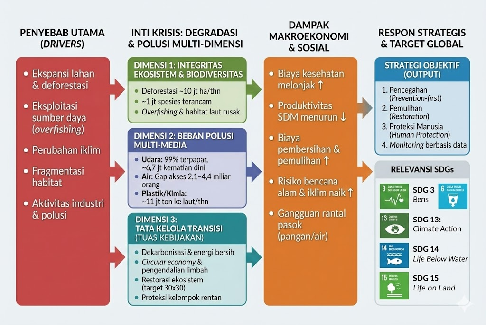

7 UAS-1 My Concepts
7.1 Kerangka Integrasi Ketahanan Lingkungan Global
Note — Abstrak Konsep
Konsep ini menempatkan hak atas lingkungan yang bersih dan sehat sebagai fondasi stabilitas sosial–ekonomi makro. Variabel kuncinya adalah kualitas lingkungan (integritas ekosistem + beban polusi) yang secara langsung memengaruhi kesehatan, produktivitas tenaga kerja, ketahanan pangan–air, serta risiko bencana.
7.1.1 Pendahuluan
7.1.1.1 Ringkasan Alur (Flowchart)

Konsep “Degradasi Lingkungan dan Polusi” menganalisis krisis lingkungan global sebagai sistem yang saling terhubung, bukan isu terpisah. Struktur konseptual ini membagi tantangan menjadi tiga dimensi utama:
- Integritas Ekosistem & Keanekaragaman Hayati — kerusakan penopang kehidupan (hutan, laut, tanah, biodiversitas)
- Beban Polusi Multi-Media — pencemaran udara, air, dan tanah (termasuk plastik & bahan kimia beracun)
- Tata Kelola Transisi & Resiliensi — kapasitas kebijakan untuk menekan emisi/polusi, memulihkan ekosistem, dan melindungi populasi rentan
7.1.2 Dimensi Integritas Ekosistem & Keanekaragaman Hayati
Warning — Kerusakan Penopang Kehidupan
Dimensi pertama membahas degradasi ekosistem yang mengurangi “jasa alam” seperti penyediaan oksigen, penyerapan karbon, penyangga banjir, dan sumber pangan.
7.1.2.1 Data dan Fakta Kunci
Deforestasi global (2015–2020): ~10 juta hektare per tahun.
FAOHome~1 juta spesies diperkirakan terancam punah (banyak “dalam beberapa dekade”) akibat tekanan manusia.
IPBESKerusakan ekosistem laut juga dipacu oleh eksploitasi berlebih dan degradasi habitat (contoh: stok ikan tidak berkelanjutan/overfished masih menjadi perhatian global).
Reuters
7.1.2.2 Faktor Penyebab (Driver)
- Ekspansi lahan (pertanian/perkebunan), pembalakan, kebakaran hutan
- Perusakan habitat & fragmentasi wilayah alami
- Eksploitasi sumber daya berlebih (mis. penangkapan ikan)
- Perubahan iklim (mempercepat tekanan ekosistem)
- Polusi (memperburuk kualitas tanah, air, dan rantai makanan)
Important
Jika integritas ekosistem runtuh, biaya ekonomi meningkat melalui hilangnya produktivitas, kerusakan aset, ketidakstabilan pangan/air, dan risiko bencana yang lebih sering.
7.1.3 Dimensi Beban Polusi Multi-Media
Warning — Polusi sebagai Krisis Kesehatan Publik & Ekonomi
Dimensi kedua menekankan bahwa polusi bukan sekadar “isu lingkungan”, tetapi risiko kesehatan terbesar dan penggerak biaya sosial–ekonomi.
7.1.3.1 Polusi Udara (Ambient + Household)
WHO melaporkan 99% populasi global menghirup udara yang melampaui ambang pedoman WHO.
World Health OrganizationDampak mortalitas: gabungan polusi udara luar-ruang dan rumah tangga terkait ~6,7 juta kematian dini per tahun.
World Health Organization
7.1.3.2 Polusi Air (Minum & Paparan)
Estimasi resmi pemantauan global (WHO/UNICEF): sekitar 2,1 miliar orang masih tidak memiliki akses “safely managed drinking water”.
World Health OrganizationStudi di Science (2024) menunjukkan estimasi bisa lebih besar: ~4,4 miliar orang di LMICs diperkirakan kekurangan layanan air minum “safely managed” (terutama karena kontaminasi fekal dan akses).
Science
Catatan konsep: Perbedaan angka ini penting untuk analisis kebijakan—bukan kontradiksi sederhana, tetapi menunjukkan gap data & metode pengukuran.
7.1.3.3 Polusi Tanah, Plastik, dan Bahan Kimia
UNEP mengestimasi ~11 juta ton plastik masuk ke laut setiap tahun (tanpa aksi, berisiko meningkat).
UNEP - UN Environment ProgrammePolutan kimia (mis. merkuri) berdampak langsung pada kesehatan dan ekosistem; respons global mencakup perjanjian seperti Minamata Convention.
Minamata Convention
7.1.3.4 Dampak Makroekonomi
Polusi memicu:
- Biaya kesehatan naik (penyakit pernapasan/kardiovaskular, kanker, dll.)
- Penurunan produktivitas tenaga kerja dan kualitas SDM
- Biaya mitigasi & pembersihan lingkungan
- Gangguan rantai pasok (air bersih, pangan, energi) dan meningkatnya risiko bencana iklim
7.1.4 Dimensi Tata Kelola Transisi & Resiliensi
Warning — Kapasitas Negara Menentukan “Trajektori” Krisis
Dimensi ketiga mengukur kemampuan sistem (negara/kota/komunitas) untuk mengubah lintasan degradasi lewat regulasi, insentif ekonomi, dan perlindungan sosial.
7.1.4.1 Tuas Kebijakan Kunci
- Dekarbonisasi energi & transportasi (menekan polusi udara + emisi GRK)
- Pengendalian limbah industri/pertanian (air & tanah) + peningkatan IPAL
- Circular economy: pengurangan plastik sekali pakai, desain ulang kemasan, EPR (extended producer responsibility)
- Konservasi & restorasi: perlindungan kawasan bernilai biodiversitas tinggi, rehabilitasi hutan/mangrove/DAS
- Perlindungan kelompok rentan: adaptasi bencana, akses air bersih, peringatan dini, layanan kesehatan
7.1.4.2 Indikator Tata Kelola (contoh metrik)
- Standar & pemantauan kualitas udara (PM2.5, NO₂) + kepatuhan emisi
- Cakupan layanan air minum aman & uji kualitas mikrobiologi/kimia
- Laju deforestasi & luas restorasi tahunan
- Tingkat kebocoran sampah plastik ke ekosistem per tahun
- Proporsi kawasan lindung efektif (mis. arah kebijakan “30x30” melindungi 30% daratan & lautan pada 2030)
UNEP - UN Environment Programme
7.1.5 Sintesis dan Indikator Pencapaian
7.1.5.1 Keterkaitan SDGs
- SDG 13 (Climate Action) — emisi & ketahanan bencana
- SDG 14 (Life Below Water) — sampah plastik, ekosistem laut, perikanan
- SDG 15 (Life on Land) — deforestasi, habitat, biodiversitas
- SDG 3.9 — pengurangan kematian/penyakit akibat polusi
World Health Organization - SDG 6.1 — akses air minum aman
7.1.5.2 Data kunci krisis lingkungan global
| Indikator | Nilai (global) | Catatan |
|---|---|---|
| Paparan udara tercemar | ~99% populasi | Di atas pedoman WHO Health Organization |
| Kematian dini terkait polusi udara | ~6,7 juta/tahun | Ambient + household Health Organization |
| Kekurangan air minum “safely managed” (JMP) | ~2,1 miliar orang | Estimasi pemantauan global Health Organization |
| Estimasi alternatif layanan air aman (Science 2024, LMICs) | ~4,4 miliar orang | Mengindikasikan gap data/metode |
| Deforestasi | ~10 juta ha/tahun (2015–2020) | Estimasi FAO |
| Plastik ke laut | ~11 juta ton/tahun | Estimasi UNEP - UN Environment Programme |
| Spesies terancam | ~1 juta spesies | Estimasi IPBES |
7.1.6 Strategi Objektif
Untuk menekan degradasi lingkungan dan polusi secara sistemik, diperlukan integrasi tiga dimensi melalui:
- Pencegahan (prevention-first): standar emisi/limbah, energi bersih, transport publik, tata kelola sampah
- Pemulihan (restoration): restorasi hutan/DAS, rehabilitasi pesisir & ekosistem kritis
- Proteksi manusia (human protection): air bersih, layanan kesehatan, adaptasi bencana, jaring pengaman sosial
- Monitoring berbasis data: sensor kualitas udara, uji air, audit limbah, pelaporan transparan
Tip — Kesimpulan
Jika integritas ekosistem terjaga, polusi ditekan, dan tata kelola transisi kuat, negara akan memperoleh “dividen” makro: kesehatan meningkat, produktivitas naik, risiko bencana turun, dan pertumbuhan ekonomi lebih stabil serta inklusif.